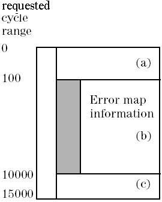

EARE? - (Edge Action REceived data)
The EARE? query returns drive and receive edge action data in the requested cycle range, as well as error information. It is used for cycle reconstruction by the Timing Diagram.
Note that EARE? is not capable to handle HXA devices and will be replaced by EARD? in the long run. Therefore, EARD? should be used for new applications.
With this command you can retrieve site specific information (only one site can be in focus at a time). For the site in focus, SmarTest displays results in the Testflow Editor and in the result tools. Also, any firmware queries report setup and results for the site currently in focus only.
Syntax
EARE? {start_cycle}, {no_of_cycles}, {(pinlist)}
returns:
EARE? {start_cycle}, {no_of_cycles}, {timing_set}, [err_type],{(pinlist)}, {#spec(data)}
Parameters
start_cycle |
This is an integer that defines the first cycle for which information is to be returned. You can enter a value between 0 and 248. |
|
no_of_cycles |
This is an integer that defines the number of cycles for which information is to be returned. The range for this parameter is 0 to 248. If a 0 is returned, no data is available for the given range. |
|
timing_set |
This parameter is an integer that represents the timing set used in the given cycle range. |
|
pinlist |
Information is only returned for the pins specified in pinlist. If more than one pin is to be included, the names must be separated with a comma. You can use the @ character to read the error data for all pins. |
|
err_type |
This parameter is optional and specifies what type of error information is available. The system returns a status only for O or IO pins: |
|
ERON |
Error information is available. The cycle range where error information is available is reported by the query VALD? - (VALid Data). |
|
NOER |
Error information is not available. The reported range lies outside the range covered by the Error Map. |
|
#spec(data) |
Edge action data in binary format. This parameter reports the length of data (in bytes) being transferred, followed by the reconstructed data. The data is returned for each pin separately. The format of the reconstructed data supports expanded device cycles with up to 10 waveforms and 14 edges per waveform. Edges without action are not reported. |
|
|
The data is to be decoded as follows: Each cycle of the reported cycle range is preceded by a two byte header information:
|
|
|
Each of the following edge actions is described by two bytes:
|
|
If reconstruction is not possible (code 110 on bits 2, 1, 0), there has been more than one edge or window compare within a single test system cycle.
If error bit 7 is set, an error has occurred on at least one of these edge or window compares.
Application
Reconstruction command used by the Timing Diagram on Test Result Commands.
Errors
An error occurs if:
- You send the query while the sequencer is running. There is then no result data available.
- You enter an invalid cycle range.
Example
EARE? 0, 1, (pin1)
returns:
EARE 0,1,3,ERON,(pin1),#9000000010\x01\x04\x00\x0B\x01\x0A\x02\x9A\x03\x9F\x0A
This example returns edge action drive and received data (in hex notation) for one cycle. To decode the data, convert it into binary notation and use the lists above.
The data in binary format is:
0000 0001 0000 0100 0000 0000 0000 1011 0000 0001 0000 1010 0000 0010 1001 1010 0000 0011 0001 1111
The device cycle contains 1 waveform with 4 edge actions. The edge actions are RZ on the drive edges 1 and 2 and a failing window compare (received value: 0) on the receive edges 3 and 4.
The EARE? answer will be split if the requested cycle range is greater than the available error map information, as shown below:

EARE? 0,15000, (pin1) EARE 0, 100, 1, NOER, (pin1), BinData (a) EARE 100, 9900, 1, ERON, (pin1), BinData (b) EARE 10000, 5000, 1, NOER, (pin1), BinData (c)
Functional changes
- Introduced before SmarTest 6.3.2